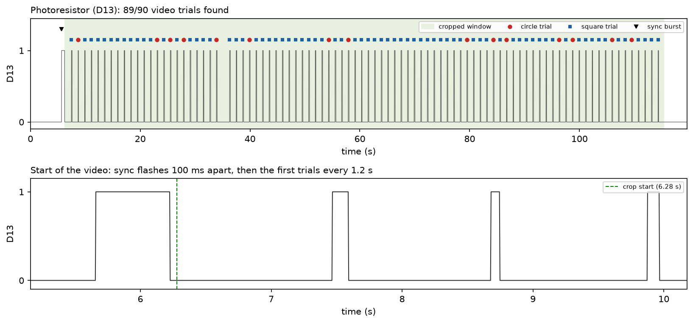
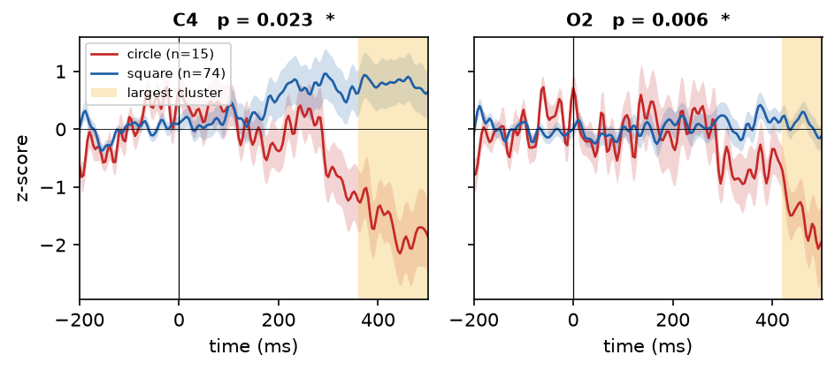
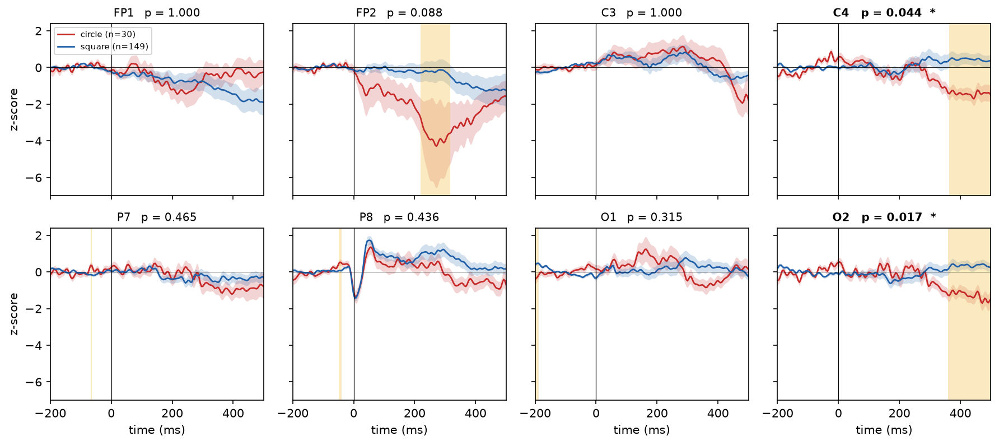
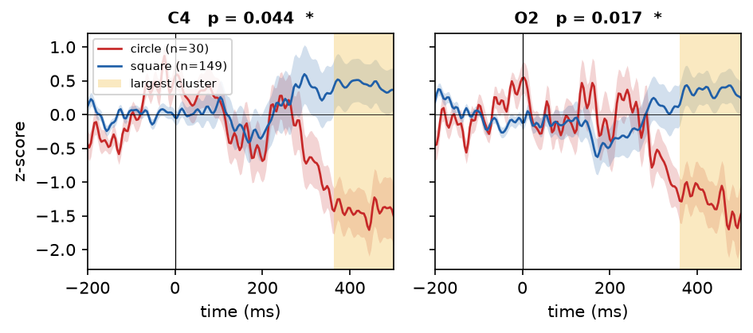
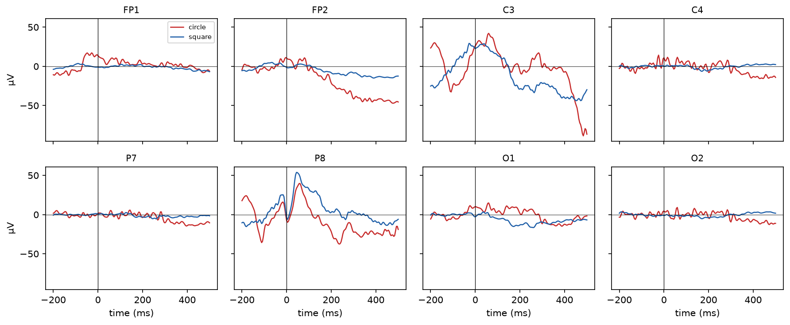
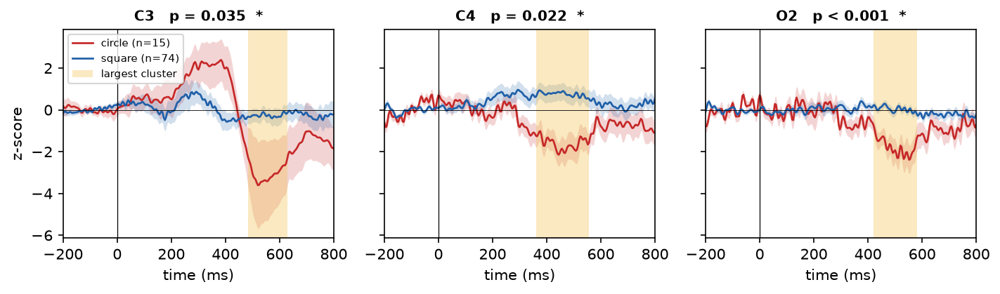
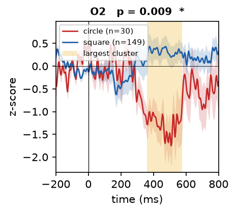

ECE441 · Lab 4 report · two runs of the oddball video, recordings trial1.txt and trial2.txt
One group member watched a video in which a red circle or a blue square appeared every 1.2 s, 90 times in total, and pressed a pushbutton as fast as possible whenever a red circle appeared while ignoring the squares. Only 15 of the 90 stimuli are circles, so the task is a visual oddball paradigm: rare, task-relevant targets among frequent non-targets. Both stimulus types should evoke early visual responses (P1/N1, roughly 100–200 ms) over the occipital cortex; rare targets that require a decision and a response are known to evoke, in addition, a late positivity, the P300, which is largest over the centro-parietal midline 300–600 ms after stimulus onset (Polich, 2007).
The goal was to record the EEG together with a stimulus marker, epoch it around the stimuli and decide, for each of the 8 electrodes, whether the response to circles differs from the response to squares by more than chance. Because the comparison is made at many time points at once, this requires a test that controls the false-alarm rate over all of them. We implemented the cluster-based nonparametric permutation test of Maris and Oostenveld (2007) as two functions (Section 3.5) and applied it to two runs of the experiment recorded in the lab, separately and pooled.
The problem. An EEG comparison between two conditions is made at every (sensor, time) pair, called a sample. Our epochs have 176 time points on 8 channels, i.e. 1408 samples. A t-test at every sample with α = 0.05 gives a family-wise false-alarm rate far above 5 % (the multiple comparisons problem, MCP): among hundreds of tests some “significant” samples are almost guaranteed even without any effect. The Bonferroni correction (α divided by the number of tests) controls the false-alarm rate but is very conservative, because neighbouring EEG samples are strongly correlated and are not independent tests.
The core idea. The paper solves the MCP with a permutation test. Under the null hypothesis the data of both conditions come from the same probability distribution, so the condition labels of the trials are exchangeable: assigning the trials to the two conditions at random produces data sets that are just as likely as the observed one. The procedure of Section 2.3 is: (1) pool the trials of both conditions; (2) draw at random as many trials as condition 1 had and call them subset 1, the rest subset 2 (a random partition); (3) compute the test statistic on this partition; (4) repeat many times (1000 in the paper) to build the permutation distribution; (5) the p-value is the proportion of random partitions whose statistic exceeds the observed one; (6) the conditions differ if p is below the critical α. The test is valid for any test statistic, and that freedom is what solves the MCP: one chooses a single statistic for the whole data structure, so only one comparison is made.
The cluster statistic. The statistic of Section 3.1.1 (single-sensor evoked responses) uses the prior knowledge that real ERP effects last tens of milliseconds, whereas noise produces isolated threshold crossings: (1) compute a t-value at every time sample; (2) keep the samples whose t exceeds a threshold (here the two-sided p < 0.05 critical value); (3) group adjacent selected samples into clusters, positive and negative t separately; (4) sum the t-values in each cluster (“cluster mass”); (5) take the largest cluster sum in absolute value. The sample threshold only shapes the clusters; the false-alarm rate is set by the permutation distribution. Because every random partition contributes its largest cluster, the final p-value controls the false-alarm rate over all time points of the channel. The p-value refers to the cluster as a whole, not to each of its samples.
How it relates to our experiment. Ours is the paper’s single-subject, between-trials design: the observations are trials (15 circles and about 75 squares per run), and under the null hypothesis that the brain responds identically to both stimuli the circle/square labels can be shuffled across trials. We use the single-sensor analysis of Section 3.1.1 for each of our 8 electrodes. The multi-sensor version (Section 3.1.2) also clusters over neighbouring sensors, which our sparse montage does not support well. The per-channel p-values therefore control errors over time within a channel but not across the 8 channels; we also report p-values corrected over channels with the maximum statistic over channels (Section 4.4 of the paper).
EEG was recorded with the OpenBCI Cyton board at 250 Hz from FP1, FP2, C3, C4, P7, P8, O1 and O2. A photoresistor taped to the lower-left corner of the screen drove a comparator on the course PCB whose output went to the Cyton’s digital input D13 (GUI widget “Digital Read”): D13 reads 1 while that corner is bright. The video shows a white square there at the onset of every stimulus, so D13 marks each onset on the same clock as the EEG. The subject watched the whole video twice in the same session (the second run started about 1 min 50 s after the first ended) without removing the headset (run 1: trial1.txt, 118.7 s; run 2: trial2.txt, 119.6 s). The large electrode DC offsets are similar at the start of both files (e.g. FP2 62.2 and 60.6 mV), consistent with an unchanged electrode placement.
We measured the timing of Lab4_video.mp4 frame by frame (20 frames/s; script video_check.py): the video starts with 5 white flashes 100 ms apart, then presents 90 stimuli every 1.2 s, the first 1.8 s after the first flash. Each white marker lasts 50 ms; each stimulus (red circle or blue square on a grey rectangle) stays on screen for 0.9 s. The positions of the red circles in the video agree with circle_mask.csv for all 90 trials.
Each OpenBCI text file was read with pandas; the columns EXG Channel 0–7 were renamed FP1…O2 and the D13 column was renamed photoresistor. The manual places D13 in column Other.2, but in our files Other.2 is constant (1) and D13 is in Other.3 (same values as Analog Channel 1, 0/256); our loader checks which column toggles between two levels and found Other.3 in both runs. The data were transposed to MNE’s channels × samples convention, the EEG converted from µV to V (×10−6), and an mne.io.RawArray was created with channel types ‘eeg’ (8×) and ‘stim’ (photoresistor), with the sampling rate read from the file header. The packet counter shows no lost samples; it is reset once, 0.5 s after the stream starts, well before the video.
mne.find_events on the photoresistor channel gave the dark-to-bright transition of every detected pulse (91 in run 1, 90 in run 2). They were converted to annotations with mne.annotations_from_events and attached with set_annotations. The recordings were band-pass filtered from 1 to 50 Hz (raw.filter(1, 50), MNE’s default zero-phase FIR filter; the stim channel is not filtered). This left a clear 60 Hz peak, because MNE’s default transition band for a 50 Hz low-pass extends to 62.5 Hz. Since the manual asks that no line noise remain, we added a 60 Hz notch filter (raw.notch_filter(60)), which removed it (Figure 4).
The photoresistor is slower than the screen: its pulses last a median of 120–136 ms instead of 50 ms, and the 5 sync flashes (100 ms apart, separated by 50 ms dark gaps) merged into a single long pulse in both runs (Figures 1 and 2). The manual expects “3 events that are nearly separated by 100ms” at the video start; we found 1. To identify the trials robustly we matched the detected onsets to the video’s timetable: each run of flashes was tried as the video start, the 90 trial onsets were predicted 1.8 s after it and every 1.2 s thereafter (tolerance ±0.15 s, the prediction re-fitted to the matches found so far to absorb clock drift), and the candidate followed by the most trials won. In run 1 all 90 trials were found; in run 2 the onset of trial 24 (a square) was not detected, so that epoch was left out together with its entry in the mask, keeping the labels of all other trials aligned. Following the manual, each recording was then cropped from 0.5 s after the video start to 1 s after the last video TTL; because the merged sync pulse was still high 0.5 s after the start, the crop begins 50 ms after that pulse ends (run 1: 6.36–115.37 s; run 2: 6.28–115.32 s). find_events on the cropped data returns 90 and 89 events, all of them trials.
Epochs were created with MNE’s default settings: −0.2 to 0.5 s around each onset, with baseline correction by the mean of −0.2 to 0 s. Indexing them with circle_mask.csv gave 15 circle and 75 square epochs in run 1 and 15 and 74 in run 2, exported to NumPy arrays of shape (epochs, 8 channels, 176 samples). Each epoch and channel was z-scored against its own baseline,
z = (x − μbaseline) / σbaseline,
with μ and σ the mean and standard deviation of the −200 to 0 ms samples, so that each trial is expressed in units of its own pre-stimulus fluctuation and trials or channels with larger amplitudes do not dominate.
nonparametric_test, Section 3.1.1). A two-sample t-test (scipy.stats.ttest_ind) at every channel and time sample, circles vs squares, gives t and p arrays of shape (8, 176). For each channel, samples with p < 0.05 are grouped into clusters of adjacent samples with scipy.ndimage.label, positive and negative t separately; each cluster’s t-values are summed and the cluster with the largest absolute sum is returned with its location (0 if no sample is below 0.05).permutation_test, Section 2.3). Function 1 on the real data gives the observed statistic of each channel. The epochs of both conditions are pooled, shuffled and split into sets of the original sizes, and function 1 is applied to the partition; this is repeated 1000 times (random seed 0). A channel’s p-value is the proportion of partitions whose largest |cluster sum| is at least the observed one. The test is two-sided, so a large cluster of either sign counts. The resolution of p is 1/1000; p = 0 is reported as p < 0.001.mne.stats.permutation_cluster_test was run with the same threshold and statistic; over every channel and analysis its p-values differ from ours by at most 0.001.



| Run 1 (trial1.txt) | Run 2 (trial2.txt) | |
|---|---|---|
| Duration (s) | 118.7 | 119.6 |
| D13 column | Other.3 | Other.3 |
| Photoresistor onsets | 91 | 90 |
| Sync onsets detected (of 5 flashes) | 1 | 1 |
| Median TTL pulse (ms) | 120 | 136 |
| Trials matched / 90 | 90 | 89 |
| Trials missed | none | 24 |
| Cropped window (s) | 6.36–115.37 | 6.28–115.32 |
| find_events in crop | 90 | 89 |
| Lost samples / counter resets | 0 / 1 | 0 / 1 |
| SD FP1 (µV) | 38.2 | 85.2 |
| SD FP2 (µV) | 100.2 | 119.4 |
| SD C3 (µV) | 239.0 | 130.4 |
| SD C4 (µV) | 25.4 | 24.4 |
| SD P7 (µV) | 16.8 | 35.6 |
| SD P8 (µV) | 145.9 | 150.3 |
| SD O1 (µV) | 59.7 | 28.0 |
| SD O2 (µV) | 17.9 | 17.0 |
Table 1. Synchronisation and data quality. SD: standard deviation of each channel in the cropped, filtered recording.
Both runs were synchronised without ambiguity: every detected onset after the sync pulse fits the 1.2 s grid, and the circles fall where circle_mask.csv places them (Figures 1 and 2). Filtering removed the slow drift and the mains line (Figure 4). Signal quality differs strongly between electrodes. C4, P7 and O2 have SDs of 17–36 µV, whereas C3, P8 and FP2 reach 100–240 µV with slow waves and bursts of high-frequency (likely muscle) activity (Figure 3), which points to poor electrode contact at those sites. FP2 also shows large positive blink deflections. P8 shows a sharp deflection that peaks 4 ms after every flash onset, in both conditions (Figures 5, 6 and 8). No visual response is that fast, so it is almost certainly non-neural, most likely electrical pick-up from the long D13/photoresistor jumpers running near that input. It is very similar for circles and squares and therefore largely cancels in the comparison, but it shows that the marker wiring couples into the EEG. The zero-phase filter also spreads such a sharp transient slightly backwards in time, which is the likely origin of the small “pre-stimulus” clusters at P7 and P8 in Table 2.



| Channel | Run 1 | Run 2 | Pooled | ||||||
|---|---|---|---|---|---|---|---|---|---|
| cluster (ms) | Σt | p (corr.) | cluster (ms) | Σt | p (corr.) | cluster (ms) | Σt | p (corr.) | |
| FP1 | – | 0 | 1.000 (1.000) | -192 to -192 | -2 | 0.577 (0.999) | – | 0 | 1.000 (1.000) |
| FP2 | – | 0 | 1.000 (1.000) | 144 to 212 | -40 | 0.088 (0.392) | 220 to 316 | -58 | 0.088 (0.338) |
| C3 | – | 0 | 1.000 (1.000) | 368 to 420 | 32 | 0.145 (0.482) | – | 0 | 1.000 (1.000) |
| C4 | -132 to -120 | -10 | 0.286 (0.863) | 360 to 500 | -93 | 0.023 (0.174) | 364 to 500 | -86 | 0.044 (0.220) |
| P7 | -28 to 16 | 27 | 0.104 (0.526) | -12 to -8 | -4 | 0.594 (0.996) | -68 to -64 | 6 | 0.465 (0.970) |
| P8 | -48 to -44 | 4 | 0.596 (0.992) | – | 0 | 1.000 (1.000) | -48 to -40 | 7 | 0.436 (0.953) |
| O1 | -16 to -8 | 7 | 0.462 (0.947) | -200 to -188 | -10 | 0.322 (0.859) | -200 to -188 | -12 | 0.315 (0.835) |
| O2 | 400 to 428 | -18 | 0.157 (0.678) | 420 to 500 | -72 | 0.006 (0.230) | 360 to 500 | -101 | 0.017 (0.179) |
| epochs | 15 circles / 75 squares | 15 circles / 74 squares | 30 circles / 149 squares | ||||||
Table 2. Largest cluster per channel, −0.2 to 0.5 s epochs, 1000 permutations. Σt: cluster sum of t (negative: circles below squares). p: function 2; in brackets: corrected over the 8 channels. Highlighted: p < 0.05. Channels with p < 0.05: run 1 none; run 2 C4, O2; pooled C4, O2.




Run 1 shows no significant difference on any channel (Figure 5; smallest p = 0.104 at P7, for a cluster around stimulus onset that cannot be a response to the stimulus). The largest post-stimulus cluster is a short negativity for circles at O2 (400–428 ms, p = 0.157). On FP1, FP2 and C3 not a single sample reached p < 0.05. Run 2 shows significant clusters at O2 (420–500 ms, p = 0.006) and C4 (360–500 ms, p = 0.023), in both cases with circles more negative than squares, by -12.9 µV and -19.8 µV on average over the cluster (Figures 6 and 7). Pooled, the same two channels are significant with the same sign and timing: O2 360–500 ms, p = 0.017, -11.8 µV; C4 364–500 ms, p = 0.044, -15.3 µV (Figures 8, 9 and 11). After correction over the 8 channels no p-value is below 0.05 in any data set (smallest: 0.174, C4 in run 2).
| Channel | Run 1 | Run 2 | Pooled | ||||||
|---|---|---|---|---|---|---|---|---|---|
| cluster (ms) | Σt | p (corr.) | cluster (ms) | Σt | p (corr.) | cluster (ms) | Σt | p (corr.) | |
| FP1 | – | 0 | 1.000 (1.000) | -192 to -192 | -2 | 0.609 (0.999) | – | 0 | 1.000 (1.000) |
| FP2 | – | 0 | 1.000 (1.000) | 144 to 212 | -40 | 0.126 (0.530) | 220 to 316 | -58 | 0.130 (0.481) |
| C3 | – | 0 | 1.000 (1.000) | 484 to 628 | -94 | 0.035 (0.245) | – | 0 | 1.000 (1.000) |
| C4 | -132 to -120 | -10 | 0.384 (0.942) | 360 to 556 | -126 | 0.022 (0.162) | 364 to 512 | -93 | 0.059 (0.284) |
| P7 | -28 to 16 | 27 | 0.157 (0.704) | -12 to -8 | -4 | 0.615 (0.997) | -68 to -64 | 6 | 0.526 (0.991) |
| P8 | -48 to -44 | 4 | 0.695 (0.998) | – | 0 | 1.000 (1.000) | -48 to -40 | 7 | 0.535 (0.980) |
| O1 | -16 to -8 | 7 | 0.568 (0.979) | -200 to -188 | -10 | 0.401 (0.920) | -200 to -188 | -12 | 0.426 (0.920) |
| O2 | 400 to 428 | -18 | 0.205 (0.822) | 420 to 580 | -153 | < 0.001 (0.123) | 360 to 576 | -154 | 0.009 (0.116) |
| epochs | 15 circles / 75 squares | 15 circles / 74 squares | 30 circles / 149 squares | ||||||
Table 3. As Table 2 for −0.2 to 0.8 s epochs. Channels with p < 0.05: run 1 none; run 2 C3, C4, O2; pooled O2.



With the longer window the O2 negativity extends to about 580 ms and becomes stronger (run 2: 420–580 ms, p < 0.001; pooled: 360–576 ms, p = 0.009). In run 2, C3 also shows a late negative cluster (484–628 ms, p = 0.035; Figure 13), but its mean difference of -122.1 µV is far larger than any ERP, C3 is the noisiest channel, and in the default window its largest cluster had the opposite sign. We therefore attribute it to a few large artefacts in the circle epochs rather than to a brain response. The pooled C4 cluster hardly changes but its p-value rises to 0.059: a longer window gives the random partitions more chances to produce a large cluster, so the same observed cluster is less extreme. Run 1 remains without significant channels.
The one consistent finding is a late, sustained negativity for targets at O2 and C4, starting about 360 ms after stimulus onset and lasting into the 500–600 ms range, roughly 10–20 µV in size. It is significant in run 2; run 1 shows only a non-significant trend in the same direction at O2 (400–428 ms, p = 0.157) and no post-stimulus cluster at C4. The pooled data are significant as well, but they include run 2 and are not an independent replication: pooling makes the effect significant overall while it is driven mainly by run 2. The effect appears on two of the cleanest electrodes, which is expected: with 15 targets per run, an effect of this size can only be detected where the background noise is low.
We did not observe the textbook P300, a positivity for targets around 300–600 ms. There are several reasons, and our data cannot fully separate them:
Our data illustrate the multiple comparisons problem directly. In run 1, a plain t-test at every sample marks 67 of 1408 samples as significant (p < 0.05), about the 70 expected by chance alone, in a run in which the permutation test detects no reliable effect. A sample-by-sample analysis would therefore “discover” effects in noise. The opposite correction is too strict: with Bonferroni (p < 0.05/1408) not a single sample survives in any of the default-window analyses, not even pooled, where 166 samples reach p < 0.05 (in the longer window only run 2 keeps 7 of 2008 samples). The cluster statistic sits in between. It ignores scattered, isolated crossings, which random partitions produce just as often, but it accumulates evidence over the 21–55 adjacent samples of the O2 and C4 clusters, and only random partitions that happen to produce an equally long and strong cluster count against it. This is the sensitivity gain that Maris and Oostenveld describe, obtained without giving up control of the false-alarm rate over time. Because the inference is about the cluster as a whole, the exact start and end of the clusters (e.g. 360 vs 420 ms) should not be over-interpreted.
The manual’s test is applied to each of the 8 channels separately. If no channel had any effect, the chance that at least one of them reaches p < 0.05 would be about 1 − 0.958 ≈ 34 % if the channels were independent (at most 8 × 5 % = 40 %). When each channel is compared with the distribution of the largest statistic over all 8 channels, none of our clusters remains below 0.05 (smallest corrected p = 0.116, O2 pooled, long window). The target negativity at O2/C4 is therefore best described as a consistent but tentative effect: the agreement in direction and latency between run 2 and the trend in run 1 speaks for it, but both runs come from the same subject and session; the channel-wise correction and the small number of targets ask for a replication before it is taken as established.
We recorded two runs of a visual oddball task with a photoresistor marker, epoched 179 trials (30 targets) with MNE and compared targets with non-targets on each electrode using our own implementation of the cluster-based permutation test of Maris and Oostenveld (2007), which agrees with MNE’s implementation. Targets were accompanied by a sustained negativity relative to non-targets at O2 and C4 from about 360 ms on. It is significant in the second run and in the pooled data (O2 p = 0.017, C4 p = 0.044), only a non-significant trend in the same direction in the first run, and not significant after correcting over the 8 channels. A classic midline P300 could not be assessed with this montage, and the button press and stimulus differences are plausible contributors to the effect. The data also show why the cluster test is needed: an uncorrected sample-wise test finds as many “effects” as chance predicts in a run where the permutation test finds no reliable difference, while Bonferroni finds none in the default window even where the cluster test does.
Maris, E., & Oostenveld, R. (2007). Nonparametric statistical testing of EEG- and MEG-data. Journal of Neuroscience Methods, 164(1), 177–190. https://doi.org/10.1016/j.jneumeth.2007.03.024
Gramfort, A., et al. (2013). MEG and EEG data analysis with MNE-Python. Frontiers in Neuroscience, 7, 267. https://doi.org/10.3389/fnins.2013.00267
Polich, J. (2007). Updating P300: An integrative theory of P3a and P3b. Clinical Neurophysiology, 118(10), 2128–2148. https://doi.org/10.1016/j.clinph.2007.04.019
lab4_stats.py (functions 1 and 2)"""
Lab 4: cluster-based nonparametric statistics (Maris & Oostenveld, 2007).
Function 1, `nonparametric_test`, is the single-sensor cluster-mass statistic of
section 3.1.1 of the paper; function 2, `permutation_test`, is the permutation
(Monte Carlo) procedure of section 2.3 that turns it into a p-value.
Both work channel by channel on arrays shaped (n_epochs, n_channels, n_times).
"""
from typing import List, Optional, Tuple
import numpy as np
from scipy import ndimage, stats
SAMPLE_ALPHA = 0.05 # threshold that selects samples for clustering (paper: 97.5th t quantile)
DEFAULT_N_PERM = 1000
Cluster = Optional[Tuple[int, int]] # (first sample, last sample + 1) of a channel's biggest cluster
def _check_datasets(dataset_a: np.ndarray, dataset_b: np.ndarray) -> None:
if dataset_a.ndim != 3 or dataset_b.ndim != 3:
raise ValueError("datasets must be shaped (n_epochs, n_channels, n_times)")
if dataset_a.shape[1:] != dataset_b.shape[1:]:
raise ValueError(
f"datasets differ in (n_channels, n_times): {dataset_a.shape[1:]} vs {dataset_b.shape[1:]}"
)
if len(dataset_a) < 2 or len(dataset_b) < 2:
raise ValueError("each condition needs at least 2 epochs for a t-test")
def _largest_cluster(t_values: np.ndarray, significant: np.ndarray) -> Tuple[float, Cluster]:
"""Largest (in absolute value) sum of t over runs of adjacent significant samples.
Positive and negative t-values are clustered separately, as the paper
prescribes for a two-sided test, so a cluster never mixes signs.
"""
best_stat, best_cluster = 0.0, None
for same_sign in (significant & (t_values > 0), significant & (t_values < 0)):
labels, n_clusters = ndimage.label(same_sign)
for slc in ndimage.find_objects(labels):
if slc is None:
continue
cluster_stat = float(t_values[slc[0]].sum())
if abs(cluster_stat) > abs(best_stat):
best_stat, best_cluster = cluster_stat, (slc[0].start, slc[0].stop)
return best_stat, best_cluster
def nonparametric_test(
dataset_a: np.ndarray,
dataset_b: np.ndarray,
return_clusters: bool = False,
):
"""Function 1: cluster-level test statistic of each channel (section 3.1.1).
1. Two-sample t-test at every (channel, time) sample across the two conditions
-> t-statistics and p-values, both shaped (n_channels, n_times).
2. For each channel: find clusters of adjacent samples with p < 0.05 (positive
and negative t separately), sum the t-values in each cluster and keep the
cluster whose sum is largest in absolute value.
Parameters
----------
dataset_a, dataset_b : ndarray, shape (n_epochs, n_channels, n_times)
Voltage traces of condition A and B (the epoch counts may differ).
return_clusters : bool
Also return where each channel's biggest cluster is.
Returns
-------
clus_tstat : ndarray, shape (n_channels,)
Signed sum of t of each channel's biggest cluster (0 if no sample has p < 0.05).
clusters : list of (start, stop) or None, only if return_clusters
Sample range [start, stop) of that cluster.
"""
_check_datasets(dataset_a, dataset_b)
t_values, p_values = stats.ttest_ind(dataset_a, dataset_b, axis=0)
significant = p_values < SAMPLE_ALPHA
clus_tstat = np.zeros(t_values.shape[0])
clusters: List[Cluster] = []
for channel in range(t_values.shape[0]):
clus_tstat[channel], cluster = _largest_cluster(t_values[channel], significant[channel])
clusters.append(cluster)
if return_clusters:
return clus_tstat, clusters
return clus_tstat
def permutation_test(
dataset_a: np.ndarray,
dataset_b: np.ndarray,
n_perm: int = DEFAULT_N_PERM,
seed: Optional[int] = 0,
return_null: bool = False,
):
"""Function 2: permutation p-value of each channel's biggest cluster (section 2.3).
1. Function 1 on the real data gives the observed statistics.
2. Pool the epochs of both conditions (n_a + n_b, n_channels, n_times).
3. Shuffle the pooled epochs and split them into two sets of the original sizes.
4. Function 1 on that random partition gives one draw of the null distribution.
5. Repeat 3-4 n_perm times.
6. p = proportion of random partitions whose statistic is larger (in absolute
value, i.e. a two-sided test) than the observed one.
Parameters
----------
dataset_a, dataset_b : ndarray, shape (n_epochs, n_channels, n_times)
n_perm : int, optional
Number of random partitions, by default 1000.
seed : int or None
Seed of the random generator (None = not reproducible).
return_null : bool
Also return the null distribution, shape (n_perm, n_channels).
Returns
-------
clus_pvals : ndarray, shape (n_channels,)
null : ndarray, only if return_null
"""
_check_datasets(dataset_a, dataset_b)
if n_perm < 1:
raise ValueError("n_perm must be at least 1")
observed = nonparametric_test(dataset_a, dataset_b)
pooled = np.concatenate([dataset_a, dataset_b], axis=0)
n_a = len(dataset_a)
rng = np.random.default_rng(seed)
null = np.empty((n_perm, pooled.shape[1]))
for i in range(n_perm):
order = rng.permutation(len(pooled))
null[i] = nonparametric_test(pooled[order[:n_a]], pooled[order[n_a:]])
# ">=" so that a channel without any cluster (statistic 0) gets p = 1, not 0
clus_pvals = (np.abs(null) >= np.abs(observed)).mean(axis=0)
if return_null:
return clus_pvals, null
return clus_pvals
lab4_analysis.py (pipeline)The figure code (lab4_plots.py), the synthetic test recording (lab4_synthetic.py) and the tests (test_lab4.py) are in the group repository.
"""
Lab 4: event-related potentials to red circles (targets, button press) vs blue
squares (non-targets), tested with the cluster-based permutation test of
Maris & Oostenveld (2007).
Pipeline (the "Data analysis" section of the manual, in order):
1. load the OpenBCI .txt file, rename EXG channels and D13 ('Other.2') -> photoresistor
2. build an MNE RawArray (channels x samples, EEG in volts, photoresistor = 'stim')
3. photoresistor onsets -> events -> annotations
4. band-pass 1-50 Hz
5. crop from 0.5 s after the video start to 1 s after the last video TTL, epoch (90 trials)
6. split the epochs with circle_mask.csv (circle = 1, square = 0)
7. z-score every epoch against its own baseline
8. function 1 + function 2 (lab4_stats.py): cluster statistic and permutation p-value per channel
9. plot the evoked responses of the channels with p < 0.05
Run from this folder:
python lab4_analysis.py # auto-finds the single OpenBCI-RAW-*.txt in this folder
python lab4_analysis.py path/to/file.txt # or name the recording explicitly
python lab4_analysis.py --demo # synthetic recording, to try the pipeline without data
Figures go to report/img, every number to report/results.json.
============================ EDIT THIS SECTION ============================
Paths are relative to this file. Use forward slashes "/".
"""
# Recordings to analyse, {tag: path}. Each is analysed on its own (as the manual
# describes) and, if there are several, also pooled. {} = auto-detect every
# OpenBCI GUI .txt recording under this folder.
RECORDING_FILES = {
"run1": "Data/trial1.txt",
"run2": "Data/trial2.txt",
}
CIRCLE_MASK_FILE = "circle_mask.csv"
SAVE_DIR = "report/img"
RESULTS_FILE = "report/results.json"
PHOTORESISTOR_COLUMN = "Other.2" # D13 per the manual; other 'Other'/'Analog' columns are tried if it is not a TTL
BAND_LOW_HZ = 1.0
BAND_HIGH_HZ = 50.0
# The 1-50 Hz band-pass alone leaves a 60 Hz peak (MNE's default transition band
# reaches 62.5 Hz), but the manual asks that no line noise is left: add a notch.
NOTCH_HZ = 60.0 # None = band-pass only
CROP_START_AFTER_VIDEO_START_S = 0.5 # manual: "around 0.5 s after the video start"
CROP_END_AFTER_LAST_TTL_S = 1.0 # manual: "up to 1 second after the last TTL"
EPOCH_TMIN_S = -0.2 # MNE defaults, as the manual asks ("epoch using the default settings")
EPOCH_TMAX_S = 0.5
EXTENDED_TMAX_S = 0.8 # supplementary analysis with the FAQ's -0.2..0.8 s window (late P300)
N_PERMUTATIONS = 1000
P_THRESHOLD = 0.05
RANDOM_SEED = 0
# =========================== END OF EDITABLE SECTION ===========================
import argparse
import inspect
import json
import os
import re
import sys
import warnings
from typing import Dict, List, NamedTuple, Optional, Sequence, Tuple
import matplotlib
matplotlib.use("Agg") # figures are only saved, never shown
import mne
import numpy as np
import pandas as pd
from scipy import stats
import lab4_stats
HERE = os.path.dirname(os.path.abspath(__file__))
CHANNEL_NAMES = ["FP1", "FP2", "C3", "C4", "P7", "P8", "O1", "O2"]
STIM_CHANNEL = "photoresistor"
EXG_PREFIX = "EXG Channel"
HEADER_ROWS = 4 # pandas header=4: row 5 holds the column names
MICROVOLT_TO_VOLT = 1e-6
SAMPLE_RATE_PATTERN = re.compile(r"%\s*Sample Rate\s*=\s*([\d.]+)\s*Hz", re.IGNORECASE)
SAMPLE_INDEX_MODULO = 256 # the Cyton packet counter wraps at 255
COUNTER_RESET_WINDOW_SAMPLES = 500 # a counter reset can only happen right after the stream starts
OPENBCI_FIRST_LINE = "%OpenBCI Raw EEG Data"
SYNC_END_MARGIN_S = 0.05 # crop at least this long after the sync TTL has gone low again
SKIP_DIRS = {".venv", "report", "demo", "__pycache__", ".pytest_cache"}
# Timing of Lab4_video.mp4, measured frame by frame (20 fps, every flash is one frame = 50 ms):
# 5 sync flashes 100 ms apart at 5.0-5.4 s, then 90 stimuli every 1.2 s from 6.8 s;
# each stimulus (red circle or blue square on grey) stays on screen for 0.9 s.
VIDEO_SYNC_FLASHES = 5
VIDEO_SYNC_INTERVAL_S = 0.1
VIDEO_FIRST_STIMULUS_AFTER_SYNC_S = 1.8
VIDEO_STIMULUS_INTERVAL_S = 1.2
VIDEO_FLASH_DURATION_S = 0.05
VIDEO_STIMULUS_DURATION_S = 0.9
N_TRIALS = 90
SYNC_MAX_GAP_S = 0.2 # onsets closer than this belong to the same sync burst
SYNC_MIN_FLASHES = 2
TRIAL_MATCH_TOLERANCE_S = 0.15 # a detected onset this close to a predicted trial is that trial
FIRST_TRIAL_SEARCH_S = TRIAL_MATCH_TOLERANCE_S # must stay < 0.2 s (see match_video_trials)
ANCHOR_CHECK_TRIALS = 3 # a sync candidate must be followed by one of the first 3 trials on time
MIN_TRIALS = 10 # fewer matched trials than this: something is wrong, stop
DRIFT_FIT_TRIALS = 10 # trials used to extrapolate the next onset (absorbs clock drift)
MIN_TTL_EDGES = 10
FLAT_CHANNEL_STD_UV = 0.5
# --------------------------------------------------------------------------
# Steps 1-2: loading and building the MNE object
# --------------------------------------------------------------------------
def parse_sample_rate(path: str) -> float:
"""Sampling rate (Hz) from the '%Sample Rate = 250 Hz' header line."""
with open(path, "r", encoding="utf-8") as handle:
for _ in range(HEADER_ROWS):
match = SAMPLE_RATE_PATTERN.search(handle.readline())
if match:
return float(match.group(1))
raise ValueError("No '%Sample Rate = ... Hz' line in the header of " + path)
def run_lengths(state: np.ndarray) -> np.ndarray:
"""Lengths of the runs of True in a boolean array."""
edges = np.diff(np.r_[0, state.astype(int), 0])
return np.flatnonzero(edges == -1) - np.flatnonzero(edges == 1)
def ttl_polarity(values: pd.Series) -> Optional[bool]:
"""True if <values> look like the photoresistor TTL (two levels, brief highs),
False if they look like an inverted TTL, None if they are not a TTL at all.
The polarity is decided by the typical (median) run length: the video's
markers are 50 ms long while the dark gaps last ~1.15 s, and a few long
bright stretches (desktop before/after the video) do not move the median.
"""
finite = values.to_numpy(dtype=float)
finite = finite[np.isfinite(finite)]
levels = np.unique(finite)
if len(levels) != 2:
return None
high = finite == levels[1]
if int(np.count_nonzero(np.diff(high.astype(int)) == 1)) < MIN_TTL_EDGES:
return None
return bool(np.median(run_lengths(high)) <= np.median(run_lengths(~high)))
def binarize_ttl(values: pd.Series, normal_polarity: bool) -> np.ndarray:
"""0/1 version of a two-level TTL column; 1 = bright screen."""
data = values.to_numpy(dtype=float)
midpoint = (np.nanmin(data) + np.nanmax(data)) / 2
bright = data > midpoint if normal_polarity else data < midpoint
return bright.astype(float)
def choose_photoresistor_column(df: pd.DataFrame, preferred: str) -> Tuple[str, bool]:
"""Column holding D13 and whether it has the expected polarity (bright = 1).
The manual says 'Other.2'. If that column is not a TTL (e.g. another GUI
version puts D13 elsewhere) the other 'Other'/'Analog' columns are tried.
"""
others = [c for c in df.columns if c != preferred and c.startswith(("Other", "Analog Channel"))]
for column in ([preferred] if preferred in df.columns else []) + others:
polarity = ttl_polarity(df[column])
if polarity is not None:
return column, polarity
raise ValueError(
"No photoresistor TTL found: none of the columns "
+ ", ".join([preferred] + others)
+ " toggles between two levels. Was the Digital Read widget switched on?"
)
def load_recording(path: str, photoresistor_column: str = PHOTORESISTOR_COLUMN) -> Tuple[pd.DataFrame, Dict]:
"""OpenBCI .txt -> DataFrame with columns FP1..O2 (uV) and 'photoresistor' (0/1).
Also returns a dict describing the file (photoresistor column, lost packets).
"""
raw_df = pd.read_csv(path, header=HEADER_ROWS, index_col=False, low_memory=False)
raw_df.columns = [c.strip() for c in raw_df.columns]
exg = [c for c in raw_df.columns if c.startswith(EXG_PREFIX)]
if len(exg) != len(CHANNEL_NAMES):
raise ValueError(f"Expected {len(CHANNEL_NAMES)} '{EXG_PREFIX} *' columns, found {len(exg)}")
column, polarity = choose_photoresistor_column(raw_df, photoresistor_column)
df = raw_df[exg].rename(columns=dict(zip(exg, CHANNEL_NAMES))).astype(float)
df = df.assign(**{STIM_CHANNEL: binarize_ttl(raw_df[column], polarity)})
info = {"photoresistor_column": column, "photoresistor_inverted": not polarity}
info.update(count_lost_samples(raw_df.get("Sample Index")))
return df, info
def count_lost_samples(sample_index: Optional[pd.Series]) -> Dict:
"""Gaps in the Cyton packet counter (0..255): each gap is lost radio packets.
A jump to 0 from anything but 255 within the first 2 s is the counter being
reset (the GUI does this once right after the stream starts), not lost data.
"""
if sample_index is None:
return {"packet_gaps": None, "lost_samples": None, "counter_resets": None}
index = sample_index.to_numpy(dtype=float).astype(int)
steps = np.diff(index) % SAMPLE_INDEX_MODULO
early = np.arange(len(steps)) < COUNTER_RESET_WINDOW_SAMPLES
resets = early & (index[1:] == 0) & (index[:-1] != SAMPLE_INDEX_MODULO - 1)
gaps = steps[(steps != 1) & ~resets]
lost = int(np.sum((gaps - 1) % SAMPLE_INDEX_MODULO))
return {"packet_gaps": int(len(gaps)), "lost_samples": lost, "counter_resets": int(resets.sum())}
def build_raw(df: pd.DataFrame, sfreq: float) -> mne.io.RawArray:
"""DataFrame (samples x channels, uV) -> RawArray (channels x samples, V); photoresistor as 'stim'."""
eeg_volts = df[CHANNEL_NAMES].T.to_numpy(dtype=float) * MICROVOLT_TO_VOLT # transpose: channels x samples
ttl = df[[STIM_CHANNEL]].T.to_numpy(dtype=float) # the photoresistor stays 0/1
data = np.vstack([eeg_volts, ttl])
info = mne.create_info(
ch_names=CHANNEL_NAMES + [STIM_CHANNEL],
sfreq=sfreq,
ch_types=["eeg"] * len(CHANNEL_NAMES) + ["stim"],
)
return mne.io.RawArray(data, info, verbose="ERROR")
# --------------------------------------------------------------------------
# Step 3: events and annotations from the photoresistor
# --------------------------------------------------------------------------
def find_flash_events(raw: mne.io.BaseRaw) -> np.ndarray:
"""Rising edges (dark -> bright) of the photoresistor channel, MNE events array."""
return mne.find_events(
raw, stim_channel=STIM_CHANNEL, shortest_event=1, consecutive="increasing", verbose="ERROR"
)
def annotate_events(raw: mne.io.BaseRaw, events: np.ndarray) -> mne.io.BaseRaw:
"""Copy of <raw> with one 'flash' annotation per event."""
annotations = mne.annotations_from_events(
events, sfreq=raw.info["sfreq"], event_desc={1: "flash"}, first_samp=raw.first_samp
)
annotated = raw.copy()
annotated.set_annotations(annotations, verbose="ERROR")
return annotated
class SyncBurst(NamedTuple):
first: int # index into the onset list
last: int
@property
def n_flashes(self) -> int:
return self.last - self.first + 1
def flash_runs(onsets_s: np.ndarray, min_flashes: int) -> List[SyncBurst]:
"""Runs of >= <min_flashes> onsets, each less than 0.2 s after the previous one."""
runs, start = [], 0
for i in range(1, len(onsets_s) + 1):
if i == len(onsets_s) or onsets_s[i] - onsets_s[i - 1] > SYNC_MAX_GAP_S:
if i - start >= min_flashes:
runs.append(SyncBurst(start, i - 1))
start = i
return runs
def find_sync_bursts(onsets_s: np.ndarray) -> List[SyncBurst]:
"""Runs of >= 2 onsets less than 0.2 s apart (the video's start-of-video flashes)."""
return flash_runs(onsets_s, SYNC_MIN_FLASHES)
def track_trials(onsets_s: np.ndarray, first_trial_s: float) -> np.ndarray:
"""Index (into <onsets_s>) of the onset of each of the 90 trials, -1 if missed.
Trials are predicted every 1.2 s; once a few are found, the prediction is a
line fitted to the last matches, which absorbs drift between the EEG clock
and the video clock and the small shifts caused by lost packets.
"""
matched = np.full(N_TRIALS, -1)
found_k: List[int] = []
found_t: List[float] = []
for k in range(N_TRIALS):
if len(found_k) >= 2:
slope, intercept = np.polyfit(found_k[-DRIFT_FIT_TRIALS:], found_t[-DRIFT_FIT_TRIALS:], 1)
predicted = intercept + slope * k
elif found_k:
predicted = found_t[-1] + VIDEO_STIMULUS_INTERVAL_S * (k - found_k[-1])
else:
predicted = first_trial_s + VIDEO_STIMULUS_INTERVAL_S * k
nearest = int(np.argmin(np.abs(onsets_s - predicted)))
if abs(onsets_s[nearest] - predicted) <= TRIAL_MATCH_TOLERANCE_S and nearest not in matched:
matched[k] = nearest
found_k.append(k)
found_t.append(float(onsets_s[nearest]))
return matched
class TrialMatch(NamedTuple):
trial_onset: np.ndarray # (90,) index into the onsets, -1 = trial not detected
burst: Optional[SyncBurst] # the sync flash(es) used as anchor; None = no anchor found
video_start_s: float # time of the first sync flash (estimated if it was not detected)
@property
def anchored(self) -> bool:
"""False if no sync flash was found: then a missed trial 0 would shift every label by one."""
return self.burst is not None
@property
def n_matched(self) -> int:
return int(np.sum(self.trial_onset >= 0))
def _first_trial_guess(onsets_s: np.ndarray, predicted: float) -> float:
near = np.abs(onsets_s - predicted) <= FIRST_TRIAL_SEARCH_S
return float(onsets_s[near][np.argmin(np.abs(onsets_s[near] - predicted))]) if near.any() else predicted
def match_video_trials(onsets_s: np.ndarray) -> TrialMatch:
"""Finds the 90 video trials among all photoresistor onsets.
The recording may also hold flashlight/hand checks, a test playback of the
first seconds of the video and a bright desktop after the video ends.
Every run of flashes (< 0.2 s apart, even a single flash, since a slow
photoresistor can merge or miss sync flashes) is tried as the sync burst;
its first detected flash may be any of the video's 5 sync flashes, so each
possibility is tried. Trial 0 is then expected 1.8 s after the first sync
flash and the candidate followed by the most trials on the 1.2 s grid wins
(ties: the later candidate, i.e. the real run rather than a test playback).
A candidate only counts if one of the first 3 trials is found where it is
predicted (clock drift is negligible that early), and trial 0 must lie
within 0.15 s of its predicted time, so a trial onset taken for a sync
flash cannot slide the labels by one or more trials.
Without any anchor (no sync flash detected at all), every onset is tried as
trial 0; the result is then flagged as not anchored.
"""
if len(onsets_s) == 0:
raise ValueError("The photoresistor never switched on: no events at all")
best: Optional[TrialMatch] = None
for run in flash_runs(onsets_s, 1):
for skipped in range(max(VIDEO_SYNC_FLASHES - run.n_flashes, 0) + 1): # sync flashes missed before it
video_start = onsets_s[run.first] - skipped * VIDEO_SYNC_INTERVAL_S
first = _first_trial_guess(onsets_s, video_start + VIDEO_FIRST_STIMULUS_AFTER_SYNC_S)
candidate = TrialMatch(track_trials(onsets_s, first), run, float(video_start))
if not (candidate.trial_onset[:ANCHOR_CHECK_TRIALS] >= 0).any():
continue # nothing where the first trials should be: this run is not the video start
if best is None or candidate.n_matched > best.n_matched or (
candidate.n_matched == best.n_matched and run.first > best.burst.first
):
best = candidate
if best is None or best.n_matched < N_TRIALS // 2:
for onset in onsets_s:
candidate = TrialMatch(track_trials(onsets_s, onset), None, float(onset - VIDEO_FIRST_STIMULUS_AFTER_SYNC_S))
if best is None or candidate.n_matched > best.n_matched:
best = candidate
if best.n_matched < MIN_TRIALS:
raise ValueError(f"Only {best.n_matched} photoresistor onsets fit the video's 1.2 s trial grid; check photoresistor.png")
return best
def trial_times(onsets_s: np.ndarray, match: TrialMatch) -> np.ndarray:
"""Onset time of every trial; missed trials are filled in from a line fit."""
found = np.flatnonzero(match.trial_onset >= 0)
slope, intercept = np.polyfit(found, onsets_s[match.trial_onset[found]], 1)
times = intercept + slope * np.arange(N_TRIALS)
times[found] = onsets_s[match.trial_onset[found]]
return times
# --------------------------------------------------------------------------
# Steps 4-6: filter, crop, epoch, split
# --------------------------------------------------------------------------
def bandpass(raw: mne.io.BaseRaw) -> mne.io.BaseRaw:
"""Copy of <raw> band-passed 1-50 Hz, plus a 60 Hz notch (EEG channels only;
the stim channel is untouched)."""
filtered = raw.copy().filter(BAND_LOW_HZ, BAND_HIGH_HZ, verbose="ERROR")
if NOTCH_HZ:
filtered.notch_filter(NOTCH_HZ, verbose="ERROR")
return filtered
def crop_window(
onsets_s: np.ndarray, match: TrialMatch, duration_s: float, offsets_s: Optional[np.ndarray] = None
) -> Tuple[float, float]:
"""(start, stop) in s: 0.5 s after the video start to 1 s after its last TTL.
The video start is the first sync flash; if no sync flash was detected it is
placed 1.8 s before trial 0. The start never falls inside the sync flashes:
a slow photoresistor can merge all 5 into one long high, so when the falling
edges (<offsets_s>) are known the crop starts after that high has ended.
"""
times = trial_times(onsets_s, match)
video_start = times[0] - VIDEO_FIRST_STIMULUS_AFTER_SYNC_S
if match.burst is not None:
video_start = onsets_s[match.burst.first]
start = video_start + CROP_START_AFTER_VIDEO_START_S
if match.burst is not None:
sync_end = onsets_s[match.burst.last] + VIDEO_FLASH_DURATION_S
if offsets_s is not None:
later = offsets_s[offsets_s > onsets_s[match.burst.last]]
sync_end = later[0] if len(later) else sync_end
start = max(start, sync_end + SYNC_END_MARGIN_S)
stop = min(times[-1] + CROP_END_AFTER_LAST_TTL_S, duration_s)
return float(start), float(stop)
def ttl_offsets_s(raw: mne.io.BaseRaw) -> np.ndarray:
"""Times (s) at which the photoresistor goes from bright back to dark."""
ttl = raw.get_data(picks=STIM_CHANNEL)[0] > 0.5
return np.flatnonzero(np.diff(ttl.astype(int)) == -1) / raw.info["sfreq"] + raw.times[1]
def trial_events(cropped: mne.io.BaseRaw, match_samples: np.ndarray) -> Tuple[np.ndarray, np.ndarray, int]:
"""Events of the cropped recording that are video trials.
Returns (events array, trial number of each event, number of events
find_events reported in the crop). <match_samples> holds the absolute
sample of every detected trial (-1 = missed).
"""
cropped_events = find_flash_events(cropped)
keep = np.isin(cropped_events[:, 0], match_samples[match_samples >= 0])
events = cropped_events[keep]
trial_number = np.array([int(np.flatnonzero(match_samples == s)[0]) for s in events[:, 0]], dtype=int)
return events, trial_number, len(cropped_events)
def make_epochs(cropped: mne.io.BaseRaw, events: np.ndarray, tmax: float = EPOCH_TMAX_S) -> mne.Epochs:
return mne.Epochs(
cropped,
events,
event_id={"flash": 1},
tmin=EPOCH_TMIN_S,
tmax=tmax,
picks="eeg",
preload=True,
verbose="ERROR",
)
def load_circle_mask(path: str) -> np.ndarray:
mask = np.loadtxt(path, delimiter=",").astype(int).ravel()
if len(mask) != N_TRIALS or not set(np.unique(mask)) <= {0, 1}:
raise ValueError(f"{path} must hold {N_TRIALS} values of 0 or 1")
return mask
def split_epochs(epochs: mne.Epochs, trial_number: np.ndarray, mask: np.ndarray) -> Tuple[mne.Epochs, mne.Epochs]:
"""(circle epochs, square epochs); epochs MNE dropped are skipped via epochs.selection."""
is_circle = mask[trial_number[epochs.selection]] == 1
return epochs[is_circle], epochs[~is_circle]
# --------------------------------------------------------------------------
# Step 7: z-score
# --------------------------------------------------------------------------
def zscore_epochs(data: np.ndarray, times: np.ndarray) -> np.ndarray:
"""z = (x - mean(baseline)) / std(baseline), per epoch and channel; baseline = t <= 0."""
baseline = data[..., times <= 0]
mean = baseline.mean(axis=-1, keepdims=True)
std = baseline.std(axis=-1, keepdims=True)
safe_std = np.where(std > 0, std, 1.0)
# an epoch whose baseline is flat (disconnected/saturated channel) becomes all zeros
return np.where(std > 0, (data - mean) / safe_std, 0.0)
# --------------------------------------------------------------------------
# Step 8: statistics
# --------------------------------------------------------------------------
def cluster_statistics(circles: np.ndarray, squares: np.ndarray, times: np.ndarray, n_perm: int, seed: int) -> Dict:
"""Function 1 + function 2 on z-scored data, plus an independent MNE cross-check."""
with warnings.catch_warnings():
warnings.simplefilter("ignore", RuntimeWarning) # t-test of a flat channel
stat, clusters = lab4_stats.nonparametric_test(circles, squares, return_clusters=True)
pvals, null = lab4_stats.permutation_test(circles, squares, n_perm=n_perm, seed=seed, return_null=True)
mne_p = mne_cross_check(circles, squares, n_perm, seed)
fwer_p = channel_corrected_pvalues(stat, null)
rows = []
for ch, name in enumerate(CHANNEL_NAMES):
cluster = clusters[ch]
rows.append(
{
"channel": name,
"cluster_stat": float(stat[ch]),
"cluster_start_ms": None if cluster is None else round(1000 * float(times[cluster[0]])),
"cluster_end_ms": None if cluster is None else round(1000 * float(times[cluster[1] - 1])),
"p_value": float(pvals[ch]),
"p_value_mne": mne_p[ch],
"p_value_corrected": float(fwer_p[ch]),
"significant": bool(pvals[ch] < P_THRESHOLD),
}
)
return {"rows": rows, "null": null, "stat": stat, "clusters": clusters, "pvals": pvals}
def channel_corrected_pvalues(observed: np.ndarray, null: np.ndarray) -> np.ndarray:
"""p-values corrected for testing 8 channels (max-statistic, Maris & Oostenveld section 4.4.3).
Each channel's |statistic| is compared with the null distribution of the
largest |statistic| over all channels in the same random partition, which
controls the family-wise error rate over channels as well as time.
"""
max_null = np.abs(null).max(axis=1)
return (max_null[:, None] >= np.abs(observed)[None, :]).mean(axis=0)
def mne_cross_check(circles: np.ndarray, squares: np.ndarray, n_perm: int, seed: int) -> List[Optional[float]]:
"""p-value of each channel's largest cluster from mne.stats.permutation_cluster_test,
with the same threshold (|t| above the two-sided 0.05 critical value) and statistic.
MNE is given |t| with tail=1 rather than t with tail=0: with tail=0 MNE builds
its null distribution from the largest *signed* cluster sum of each
permutation, which ignores strong negative clusters and makes p too small.
Summing |t| over a cluster and taking the largest is exactly the two-sided
max-|cluster| statistic of Maris & Oostenveld. MNE also counts the original
partition as one of the permutations, so its p is ~1/n_perm larger.
"""
threshold = stats.t.ppf(1 - lab4_stats.SAMPLE_ALPHA / 2, len(circles) + len(squares) - 2)
def t_stat(a: np.ndarray, b: np.ndarray) -> np.ndarray:
return np.abs(stats.ttest_ind(a, b, axis=0).statistic)
# newer MNE renamed seed= to rng=
seed_kw = "rng" if "rng" in inspect.signature(mne.stats.permutation_cluster_test).parameters else "seed"
pvalues: List[Optional[float]] = []
for ch in range(circles.shape[1]):
t_obs, clusters, cluster_p, _ = mne.stats.permutation_cluster_test(
[circles[:, ch], squares[:, ch]],
threshold=threshold,
n_permutations=n_perm,
tail=1,
stat_fun=t_stat,
out_type="mask",
verbose="ERROR",
**{seed_kw: seed},
)
if len(clusters) == 0:
pvalues.append(None)
continue
sums = [np.nan_to_num(t_obs)[c].sum() for c in clusters]
pvalues.append(float(cluster_p[int(np.argmax(sums))]))
return pvalues
# --------------------------------------------------------------------------
# Driver
# --------------------------------------------------------------------------
def is_openbci_recording(path: str) -> bool:
try:
with open(path, encoding="utf-8", errors="ignore") as handle:
return handle.readline().strip() == OPENBCI_FIRST_LINE
except OSError:
return False
def find_recordings(folder: str = HERE) -> Dict[str, str]:
"""Every OpenBCI GUI .txt under <folder> (skipping .venv, report, demo), tagged run1, run2, ..."""
found = []
for root, dirs, files in os.walk(folder):
dirs[:] = [d for d in dirs if d not in SKIP_DIRS]
found += [os.path.join(root, f) for f in files if f.endswith(".txt") and is_openbci_recording(os.path.join(root, f))]
if not found:
sys.exit(f"No OpenBCI recording (.txt starting with '{OPENBCI_FIRST_LINE}') under {folder}.")
return {f"run{i + 1}": path for i, path in enumerate(sorted(found))}
def condition_summary(circles: np.ndarray, squares: np.ndarray, times: np.ndarray) -> List[Dict]:
"""Peak of the circle-minus-square difference wave (z units) per channel, after 0 s."""
diff = circles.mean(axis=0) - squares.mean(axis=0)
post = times > 0
rows = []
for ch, name in enumerate(CHANNEL_NAMES):
i = int(np.argmax(np.abs(diff[ch, post])))
rows.append({"channel": name, "peak_ms": round(1000 * float(times[post][i])), "peak_diff_z": float(diff[ch, post][i])})
return rows
class PreparedRun(NamedTuple):
cropped: mne.io.BaseRaw # filtered, cropped recording (EEG + photoresistor)
events: np.ndarray # events of the video trials in <cropped>
trial_number: np.ndarray # trial (0..89) of each event
info: Dict # numbers for results.json
def _print_match_warnings(match: TrialMatch, file_info: Dict) -> None:
detected = match.trial_onset >= 0
if not match.anchored:
print(" WARNING: no sync flash found before the trials. If trial 1 was missed, every circle/square label is")
print(" shifted by one trial. Check the photoresistor figure before trusting the statistics.")
if detected.sum() < N_TRIALS:
print(f" WARNING: trials not detected (1-based): {[int(k) + 1 for k in np.flatnonzero(~detected)]}; they are left out.")
if file_info["photoresistor_inverted"]:
print(" WARNING: D13 reads 0 when bright in this file; it was inverted.")
if file_info["lost_samples"]:
print(f" WARNING: {file_info['lost_samples']} samples lost over the radio link.")
def prepare_run(tag: str, recording: str, mask: np.ndarray, save_dir: str) -> PreparedRun:
"""Manual steps 1-5 for one recording, plus its data-quality figures."""
import lab4_plots
print(f"[{tag}] {recording}")
sfreq = parse_sample_rate(recording)
df, file_info = load_recording(recording)
raw = build_raw(df, sfreq)
print(f" {len(df)} samples at {sfreq:g} Hz ({len(df) / sfreq:.1f} s); D13 read from '{file_info['photoresistor_column']}'")
events = find_flash_events(raw)
onsets_s = events[:, 0] / sfreq
raw = annotate_events(raw, events)
match = match_video_trials(onsets_s)
detected = match.trial_onset >= 0
match_samples = np.where(detected, events[np.maximum(match.trial_onset, 0), 0], -1)
print(f" {len(events)} photoresistor onsets, {detected.sum()}/{N_TRIALS} trials matched")
_print_match_warnings(match, file_info)
filtered = bandpass(raw)
crop_start, crop_stop = crop_window(onsets_s, match, raw.times[-1], ttl_offsets_s(raw))
cropped = filtered.copy().crop(tmin=crop_start, tmax=crop_stop)
events_crop, trial_number, n_events_in_crop = trial_events(cropped, match_samples)
print(f" cropped to {crop_start:.2f}-{crop_stop:.2f} s: find_events gives {n_events_in_crop} events, {len(events_crop)} are trials")
sync_onsets = 0 if match.burst is None else match.burst.n_flashes
highs = run_lengths(raw.get_data(picks=STIM_CHANNEL)[0] > 0.5) / sfreq
std_uv = cropped.get_data(picks="eeg").std(axis=1) / MICROVOLT_TO_VOLT
info = {
"recording": os.path.basename(recording),
"sfreq": sfreq,
"n_samples": len(df),
"duration_s": round(len(df) / sfreq, 1),
**file_info,
"n_onsets_total": int(len(events)),
"alignment_anchored": match.anchored,
"sync_onsets_detected": None if match.burst is None else sync_onsets,
"median_flash_ms": round(1000 * float(np.median(highs))),
"video_start_s": round(match.video_start_s, 2),
"n_trials_matched": int(detected.sum()),
"missed_trials": [int(k) for k in np.flatnonzero(~detected)],
"n_unmatched_onsets": int(len(events) - detected.sum() - sync_onsets),
"crop_start_s": round(crop_start, 2),
"crop_stop_s": round(crop_stop, 2),
"n_events_in_crop": n_events_in_crop,
"channel_std_uv": {n: round(float(s), 1) for n, s in zip(CHANNEL_NAMES, std_uv)},
}
info["flat_channels"] = [n for n, s in info["channel_std_uv"].items() if s < FLAT_CHANNEL_STD_UV]
lab4_plots.plot_photoresistor(raw, onsets_s, match, (crop_start, crop_stop), mask, save_dir, f"{tag}_photoresistor.png")
lab4_plots.plot_raw_with_annotations(cropped, save_dir, f"{tag}_raw_annotations.png")
lab4_plots.plot_psd_before_after(raw, filtered, save_dir, f"{tag}_psd_before_after.png")
return PreparedRun(cropped, events_crop, trial_number, info)
class ConditionData(NamedTuple):
circles: np.ndarray # z-scored, (n_circles, n_channels, n_times)
squares: np.ndarray
times: np.ndarray
circle_epochs: mne.Epochs
square_epochs: mne.Epochs
def condition_data(run: PreparedRun, mask: np.ndarray, tmax: float) -> ConditionData:
"""Steps 5-7: epochs (MNE defaults, tmax as given), split with the mask, z-score."""
epochs = make_epochs(run.cropped, run.events, tmax=tmax)
circle_ep, square_ep = split_epochs(epochs, run.trial_number, mask)
times = epochs.times
return ConditionData(
zscore_epochs(circle_ep.get_data(copy=True), times),
zscore_epochs(square_ep.get_data(copy=True), times),
times,
circle_ep,
square_ep,
)
def _print_test(tag: str, label: str, block: Dict, rows: List[Dict]) -> None:
sig = ", ".join(block["significant_channels"]) or "none"
print(f" [{tag} {label} {EPOCH_TMIN_S:+.1f}..{block['tmax_s']:.1f} s] {block['n_circles']} circles / {block['n_squares']} squares; p < {P_THRESHOLD}: {sig}")
for row in rows:
window = "-" if row["cluster_start_ms"] is None else f"{row['cluster_start_ms']}..{row['cluster_end_ms']} ms"
mne_p = " - " if row["p_value_mne"] is None else f"{row['p_value_mne']:.3f}"
print(
f" {row['channel']:>3}: cluster sum t = {row['cluster_stat']:8.2f} {window:>16}"
f" p = {row['p_value']:.3f} (MNE {mne_p}, corrected over channels {row['p_value_corrected']:.3f})"
)
def compare_conditions(tag: str, label: str, data: ConditionData, n_perm: int, seed: int, save_dir: str) -> Dict:
"""Step 8 + figures for one set of circle/square epochs."""
import lab4_plots
circles, squares, times = data.circles, data.squares, data.times
test = cluster_statistics(circles, squares, times, n_perm, seed)
block = {
"tmin_s": EPOCH_TMIN_S,
"tmax_s": round(float(times[-1]), 3),
"n_epochs": len(circles) + len(squares),
"n_times": len(times),
"n_circles": len(circles),
"n_squares": len(squares),
"channels": test["rows"],
"difference_peaks": condition_summary(circles, squares, times),
"significant_channels": [r["channel"] for r in test["rows"] if r["significant"]],
**sample_wise_counts(circles, squares),
}
add_cluster_microvolts(block["channels"], test["clusters"], data)
prefix = f"{tag}_{label}"
lab4_plots.plot_evoked_grid(circles, squares, times, test, f"{prefix}_erp_all.png", save_dir)
lab4_plots.plot_significant(circles, squares, times, test, f"{prefix}_erp_significant.png", save_dir)
lab4_plots.plot_null_distributions(test, f"{prefix}_null.png", save_dir)
_print_test(tag, label, block, test["rows"])
return block
def sample_wise_counts(circles: np.ndarray, squares: np.ndarray) -> Dict:
"""How many (channel, time) samples a plain t-test calls significant, uncorrected
and Bonferroni-corrected: the multiple comparisons problem in numbers."""
with warnings.catch_warnings():
warnings.simplefilter("ignore", RuntimeWarning)
p = stats.ttest_ind(circles, squares, axis=0).pvalue
return {
"n_tests": int(p.size),
"uncorrected_samples": int(np.sum(p < lab4_stats.SAMPLE_ALPHA)),
"bonferroni_samples": int(np.sum(p < lab4_stats.SAMPLE_ALPHA / p.size)),
}
def add_cluster_microvolts(rows: List[Dict], clusters: Sequence, data: ConditionData) -> None:
"""Adds to every row the circle-minus-square difference (uV) averaged over its largest cluster."""
circle_uv = data.circle_epochs.get_data(copy=True).mean(axis=0) / MICROVOLT_TO_VOLT
square_uv = data.square_epochs.get_data(copy=True).mean(axis=0) / MICROVOLT_TO_VOLT
for ch, (row, cluster) in enumerate(zip(rows, clusters)):
if cluster is None:
row["cluster_diff_uv"] = None
continue
window = slice(cluster[0], cluster[1])
row["cluster_diff_uv"] = round(float((circle_uv[ch, window] - square_uv[ch, window]).mean()), 1)
def pool(datasets: Sequence[ConditionData]) -> ConditionData:
"""Epochs of several runs of the same subject, concatenated per condition."""
return ConditionData(
np.concatenate([d.circles for d in datasets]),
np.concatenate([d.squares for d in datasets]),
datasets[0].times,
mne.concatenate_epochs([d.circle_epochs for d in datasets], verbose="ERROR"),
mne.concatenate_epochs([d.square_epochs for d in datasets], verbose="ERROR"),
)
WINDOWS = (("main", EPOCH_TMAX_S), ("extended", EXTENDED_TMAX_S))
def analyse(
recordings: Dict[str, str],
save_dir: str,
results_path: str,
n_perm: int = N_PERMUTATIONS,
seed: int = RANDOM_SEED,
is_demo: bool = False,
) -> Dict:
"""Every recording on its own and, if there are several, all of them pooled."""
import lab4_plots
os.makedirs(save_dir, exist_ok=True)
mask = load_circle_mask(os.path.join(HERE, CIRCLE_MASK_FILE))
results: Dict = {"is_demo": is_demo, "n_permutations": n_perm, "seed": seed, "notch_hz": NOTCH_HZ, "runs": {}, "pooled": None}
per_window: Dict[str, List[ConditionData]] = {label: [] for label, _ in WINDOWS}
for tag, recording in recordings.items():
run = prepare_run(tag, recording, mask, save_dir)
results["runs"][tag] = dict(run.info)
for label, tmax in WINDOWS:
data = condition_data(run, mask, tmax)
per_window[label].append(data)
results["runs"][tag][label] = compare_conditions(tag, label, data, n_perm, seed, save_dir)
if label == "main":
lab4_plots.plot_mne_evoked(data.circle_epochs, data.square_epochs, save_dir, f"{tag}_evoked_microvolts.png")
if len(recordings) > 1:
print(f"[pooled] {', '.join(recordings)}")
results["pooled"] = {}
for label, _ in WINDOWS:
data = pool(per_window[label])
results["pooled"][label] = compare_conditions("pooled", label, data, n_perm, seed, save_dir)
if label == "main":
lab4_plots.plot_mne_evoked(data.circle_epochs, data.square_epochs, save_dir, "pooled_evoked_microvolts.png")
with open(results_path, "w", encoding="utf-8") as handle:
json.dump(results, handle, indent=2)
print("Figures in", save_dir, "| numbers in", results_path)
return results
def main(argv: Optional[Sequence[str]] = None) -> Dict:
parser = argparse.ArgumentParser(description=__doc__.split("=====")[0], formatter_class=argparse.RawDescriptionHelpFormatter)
parser.add_argument("recordings", nargs="*", help="OpenBCI GUI .txt files (default: RECORDING_FILES, else auto-detect)")
parser.add_argument("--demo", action="store_true", help="analyse a synthetic recording instead")
parser.add_argument("--n-perm", type=int, default=N_PERMUTATIONS)
args = parser.parse_args(argv)
if args.demo:
import lab4_synthetic
path = os.path.join(HERE, "demo", "OpenBCI-RAW-demo.txt")
lab4_synthetic.write_recording(path)
recordings = {"run1": path}
elif args.recordings:
recordings = {f"run{i + 1}": path for i, path in enumerate(args.recordings)}
elif RECORDING_FILES:
recordings = {tag: os.path.join(HERE, path) for tag, path in RECORDING_FILES.items()}
else:
recordings = find_recordings()
return analyse(
recordings,
os.path.join(HERE, SAVE_DIR),
os.path.join(HERE, RESULTS_FILE),
n_perm=args.n_perm,
is_demo=args.demo,
)
if __name__ == "__main__":
main()